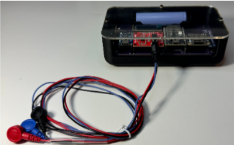
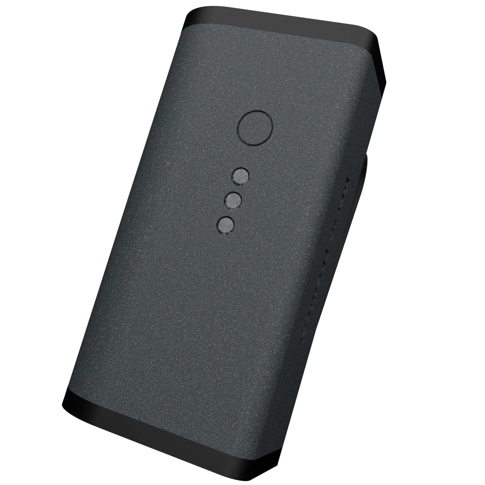

Berta Medical — Wearable ECG Platform
Co-founded a medical startup to make remote health monitoring accessible and affordable. Designed custom wearable ECG hardware through three development phases — prototype, dev kit PCB, and final wearable PCB — wrote ESP32 firmware for encrypted MQTT data transmission, and integrated with an AWS-based cloud backend serving separate patient and doctor web portals.
Barriers to Affordable Remote Monitoring
Berta Medical was co-founded with Billy Zhang to address barriers in accessing affordable healthcare and remote patient monitoring. Existing wearable ECG solutions were either prohibitively expensive or locked into proprietary ecosystems without meaningful data access for patients or providers.
My contribution focused on the full hardware stack — designing custom wearable ECG hardware through three phases, writing firmware for secure data transmission, and building the integration layer with an AWS-based backend. Billy developed the AWS backend and front-end user interfaces that both doctors and patients utilize.

Design Constraints Across Four Domains
Wearable Device
- Lightweight and comfortable for extended wear
- Accurate ECG acquisition via AD8232 analog front-end with electrode interface
- Wireless communication via ESP32 over WiFi
- Rechargeable Li-ion with safe charging circuitry
Custom PCBs
- Dev Kit PCB: modular expansion headers for firmware and comms testing (OLED, microSD)
- Final Wearable PCB: integrated ECG front-end, ESP32, MAX1704x fuel gauge, TP4056 charger
- Compact form factor; SMD-only assembly; test points for post-assembly validation
System Architecture
- Encrypted MQTT to AWS IoT Core for secure device messaging and storage
- Web portals for doctors and patients serving real-time and historical ECG data
- Potential AI analytics integration to detect multiple health trends
Startup Context
Turn hardware prototypes into a viable medical product concept and pitch to interdisciplinary judges — physicists, engineers, and business leaders — at the Rowan New Venture Competition.
Three Phases of Hardware Development
Phase 1 — Prototype
Two initial form factor variants were explored: a chest-mount and a clip-on configuration. Off-the-shelf development boards validated ECG signal acquisition concept and electrode placement strategies before committing to custom PCB design.
Phase 2 — Dev Kit PCB
Designed a custom development kit PCB with modular expansion headers for rapid firmware and communications iteration. Key features: 128×32 OLED display for real-time debug output, microSD card slot for local data logging, and an 18650 battery holder. This board served as the primary platform for iterating on MQTT communication flows and firmware reliability before the final wearable form factor was locked in.
- ESP32-C3-DevKitC-02 as the compute module
- AD8232 ECG analog front-end with instrumentation amplifier
- 128×32 OLED via I2C for debug output
- MicroSD card via SPI for data logging
- 18650 Li-ion battery holder with TP4056 charging
- Designed in KiCad; assembled in-house
Phase 3 — Final Wearable PCB
The final integrated PCB combined everything into a compact wearable form factor designed for actual patient use:
- AD8232 ECG analog front-end with electrode snap connectors
- ESP32 microcontroller for real-time processing and WiFi
- MAX1704x fuel gauge for accurate battery state-of-charge monitoring
- TP4056 safe Li-ion charging circuitry
- Daughter-board connector for electrode interface separation
- Strategic test points placed for post-assembly validation
- Full SMD assembly; no through-hole components in signal path


Interactive PCB Model
End-to-End Encrypted Data Pipeline
Firmware (ESP32, C++)
The embedded firmware handles real-time ECG signal sampling from the AD8232 analog front-end, applies basic signal filtering, and packages data into encrypted MQTT messages for cloud transmission. The Dev Kit PCB served as the rapid iteration platform before the validated firmware was ported to the final wearable hardware.
Cloud Architecture (AWS)
Data flows from the wearable device via TLS-encrypted MQTT to AWS IoT Core for secure ingestion and storage. From there, two web portals provide role-based access:
- Patient portal — personal vitals dashboard, medication tracking, doctor assignments, appointment scheduling, and device status monitoring
- Doctor portal — multi-patient monitoring dashboard with real-time ECG viewing, patient history, appointment management, and AI-powered analytics for detecting health trends across patient populations
Both portals were developed by co-founder Billy Zhang; I owned the hardware-to-cloud integration layer, MQTT message formatting, and device authentication.

Signal Integrity, Comms, and Live Demo
Hardware Validation
- Electrode contact quality and ECG signal stability verified on both the prototype and final wearable PCB
- AD8232 output confirmed with oscilloscope — clean QRS complex visible in captured waveform
- MAX1704x fuel gauge readings verified against known battery state
- TP4056 charging current and cutoff behavior confirmed under bench load
Communications Validation
- Dev Kit PCB validated full MQTT communication path to AWS IoT Core over WiFi
- TLS handshake and certificate authentication confirmed before final wearable integration
- End-to-end data latency measured from electrode input to portal display
Competition Demonstration
The complete prototype system — hardware, cloud infrastructure, and both web portals — was live-demonstrated at the Rowan New Venture Competition to an interdisciplinary panel of judges including physicists, engineers, and business leaders.
Startup Context & Venture Competition
Berta Medical was co-founded with Billy Zhang as a genuine product development effort. We developed a full revenue model targeting three customer segments: consumers via monthly subscription for device and care access, small medical practices through a provider-facing service model, and medical research facilities through a data analytics partnership program.
Primary revenue streams:
- Consumer subscriptions — yearly or monthly plans pairing device access with on-demand care across specialties (cardiology, neurology, orthopedics, dermatology, endocrinology, pulmonology)
- Small medical practices — service that pays medical practitioners through Berta as a primary insurance intermediary
- Medical research facilities — Berta Medical Data Services: selling anonymized medical data to enable research and development of new medical innovations
The complete prototype system was demonstrated and pitched to interdisciplinary judges at the Rowan New Venture Competition. The pitch covered technical implementation, business viability, target market sizing, and the competitive landscape for wearable remote monitoring.

Lessons & Next Steps
The Dev Kit phase proved essential — iterating firmware and MQTT flows on the larger, debug-friendly board before committing to the compact wearable layout significantly accelerated reliability. Issues with WiFi reconnection logic and MQTT message queuing were caught and resolved at the dev kit stage, not on the final wearable.
Next steps:
- UI and hardware design refinements based on stakeholder feedback from the competition
- User testing with target patients to validate comfort, lead placement guidance, and portal usability
- Hardware miniaturization pass — tighter component placement and potentially a single-chip ECG solution
- Regulatory pathway research (FDA 510k) for eventual commercialization